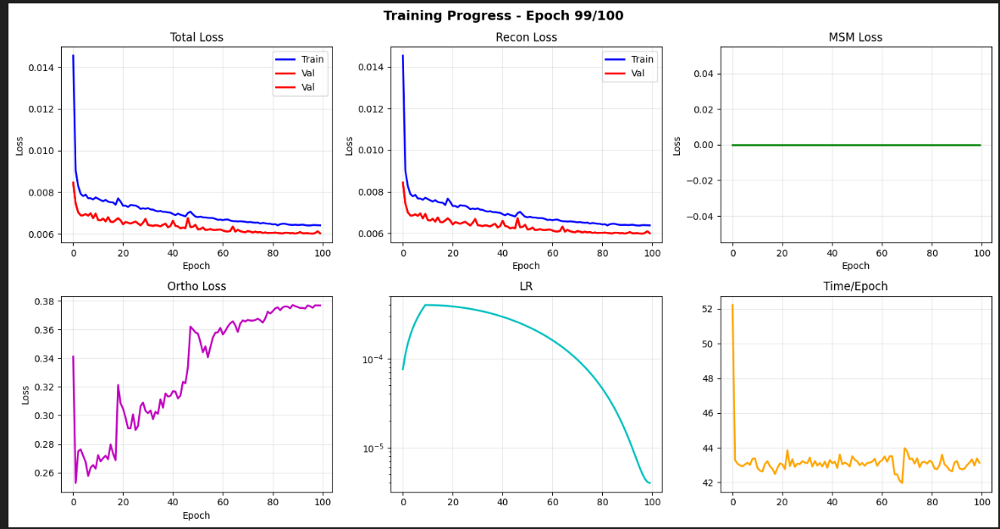

The Goal
To build a self-supervised object-centric video model from scratch on consumer hardware, capable of decomposing video into meaningful "object slots" without any labels.
Inspiration
I discovered the Slot-BERT paper (ICLR 2025) and was fascinated by the potential of learning object identities purely through reconstruction, similar to how LLMs learn language.
As a Learner
The original paper used a massive model. My challenge is to reproduce these results and then extend upon its ideas on my home PC (RTX 2070 Super) and optimize the architecture to eventually run in real-time on a webcam. Why you may ask? Cuz its cool!
v1 Demo
This is the most basic version of the model. The architecture details are provided below.
Since we are not yet using any temporal reasoning (the Temporal Transformer is disabled), we
recalculate everything as if it is single-shot for each frame. This results in the "flashing"
segmentation you see below, as the slots do not stay consistent across frames (the "blue" slot in
frame 1 might be the "red" slot in frame 2).

Training Loss
Training Loss Curves
Architecture & Process
1. High-Level Architecture
Tiny Slot-BERT is an object-centric video understanding model designed to be lightweight and efficient. It decomposes video frames into a set of discrete "slots," where each slot represents an object or background element. These slots track objects over time and can be used to reconstruct the original video, ensuring they capture meaningful visual information.
The architecture consists of four main components:
- Visual Encoder: Extracts feature maps from input frames.
- Slot Attention: Iteratively refines a set of initialized memory slots to bind to specific objects in the features.
- Temporal Transformer: (Disabled in Phase 1) Processes slots across time to handle dynamics.
- Slot Decoder: Reconstructs the image and segmentation masks from the slots.
Note: In this implementation (Phase 1), the Temporal Transformer is disabled. The model processes each frame independently to first learn robust object discovery (slot attention) and reconstruction before adding the complexity of cross-frame reasoning. This staged approach makes training more stable.
2. Component Details
A. Simple Convolutional Encoder (models/encoder.py)
A lightweight CNN encoder is used for efficiency in Phase 1.
- Structure: A stack of 4 convolutional blocks with BatchNorm and ReLU.
- Input: RGB Video Frames (\(B \times 3 \times H \times W\)).
- Downsampling: Reduces input spatial dimensions by 16x (e.g., \(128 \times 128 \to 8 \times 8\)).
- Output: Feature map (\(B \times N \times D\)), where \(N = 64\) and \(D = 384\).
B. Slot Attention (models/slot_attention.py)
The core mechanism for object discovery.
- Input: Features from the encoder + Positional Embeddings.
- Slots: A set of \(K\) learnable vectors (randomly initialized per frame with high variance to prevent collapse).
- Process:
- Iterative Attention: Over \(T\) iterations (default 3), slots compete to "explain" parts of the feature map via Softmax attention.
- Key/Query/Value: Slots act as Queries; Features act as Keys and Values.
- Update: Slots are updated using a GRU (Gated Recurrent Unit) based on the accumulated weighted values they attend to.
- Output: Refined Slots (\(B \times K \times D_{slot}\)) and Attention Masks (which serve as segmentation masks).
C. Slot Decoder (models/decoder.py)
Responsible for reconstructing the image from the abstract slots.
- Type: Spatial Broadcast Decoder.
- Process:
- Broadcast: Each slot is replicated across a spatial grid.
- Positional Encoding: Learnable 2D positional embeddings are added.
- Pixel Decoder: A small CNN processes grids to produce RGB + Mask.
- Composition: Final image is a weighted sum of RGB sprites using Masks.
- Key Feature: The Slot Attention Masks are passed directly to reconstruction to force the attention mechanism to learn accurate segmentation.
3. Training Losses
The model is trained with a combination of losses designed to encourage meaningful object segmentation:
| Loss | Description | Weight |
|---|---|---|
| Reconstruction (MSE) | Pixel-space L2 loss between input and reconstruction. The primary signal. | 1.0 |
| Orthogonality | Penalizes slot similarity (cosine) to encourage diverse representations. | 0.0 (disabled) |
| Mask Entropy | Encourages sharp, decisive segmentation masks (low per-pixel entropy). | 0.0 (disabled) |
| Slot Coverage | Prevents "dead" slots that cover no area. Uses exponential penalty + entropy bonus. | 0.0 (disabled) |
| Appearance Consistency | Critical. Penalizes color variance within a slot's mask. Forces slots to align with object boundaries. | 0.0 (disabled) |
Note on Disabled Losses: In certain training configurations, auxiliary losses (ortho, entropy, coverage, appearance) are set to 0 to initially let the model learn reconstruction freely. These can be progressively enabled to refine slot specialization.
4. Inference Process
- Input: A video clip (e.g., 24 frames of \(128 \times 128\)).
- Encoding: The encoder processes each frame independently to extract feature maps. Fourier positional embeddings are added.
- Slot Extraction: Slot Attention runs on each frame's features to extract \(K\) slots (e.g., 7 slots).
- Decoding:
- Slots are passed to the Decoder.
- The decoder produces an RGB reconstruction for each slot.
- Per-slot images are combined into a full frame reconstruction.
- Visualization:
- Original: Input video.
- Segmentation: An argmax visualization showing which slot "owns" each pixel.
- Slots: Visualization of what individual slots "see" (original image masked by slot attention).
- Reconstruction: Model's attempt to recreate the video.
Project Goals
Build a self-supervised video model that achieves the following:
Development Phases
Phase 1
Reproduction
Slot-BERT core architecture
Phase 2
Validation
Object-centric benchmark (MOVi)
Phase 3
Extension
Online/streaming inference
Problem Definition
Input
Unlabeled RGB video clips:
\(\{I_1, I_2, \ldots, I_T\}\)
Output
For each frame \(t\):
- \(K\) slot embeddings: \(S_{t,k} \in \mathbb{R}^D\)
- Soft segmentation masks: \(M_{t,k} \in [0,1]^{H \times W}\)
Constraints (Self-Supervised = No Labels!)
- No ground-truth segmentation
- No object identity labels
- No supervision beyond reconstruction
High-Level Architecture
Core Insight: Objects are represented as latent slots. Slots are treated as tokens. Temporal reasoning operates over slots, not pixels.
Video frames
↓
┌─────────────────────────┐
│ Frozen Visual Encoder │ (ViT / CNN, pretrained)
└─────────────────────────┘
↓
Patch-level feature maps
↓
┌─────────────────────────┐
│ Slot Attention │ (per-frame object discovery)
└─────────────────────────┘
↓
Object slots (K per frame)
↓
┌─────────────────────────┐
│ Temporal Slot Transformer│ (BERT-style, across time)
└─────────────────────────┘
↓
┌─────────────────────────┐
│ Slot Decoder │ (reconstructions + masks)
└─────────────────────────┘
↓
Feature reconstruction loss
Key Design Decisions
- Frozen encoder: Reduces memory footprint and training time significantly
- Per-frame slots: Slot Attention operates independently per frame before temporal modeling
- Feature-space reconstruction: More robust than pixel-space, captures semantics
- Bidirectional attention: Enables reasoning about past and future context
Core Components (Deep Dive)
1. Frozen Visual Encoder
Converts images into spatial feature maps using a pretrained model. Frozen during training to reduce compute and isolate object-centric learning.
Options Considered:
| DINO ViT-S/8 | Best quality features, works great for object discovery |
| ResNet-18 | Lightweight fallback, faster but lower quality |
| DINOv2 | Latest and greatest, exploring as an upgrade |
Output: For an input image of size \(H \times W\), produces feature maps of shape \((H/p) \times (W/p) \times D\) where \(p\) is the patch size and \(D\) is feature dimension.
2. Slot Attention Module
The heart of object discovery. Takes spatial features and produces \(K\) object slots per frame. Each slot softly "claims" regions of the image through competitive attention.
Algorithm (Iterative Refinement):
- Initialize \(K\) slots from a learned distribution: \(s_k \sim \mathcal{N}(\mu, \sigma)\)
- Compute attention weights between slots and spatial features
- Normalize weights across slots (competition via softmax)
- Update slots via weighted aggregation of features
- Apply GRU update for stability
- Repeat for \(T\) iterations (typically 3-5)
Attention Computation:
\[\text{attn}_{ij} = \frac{\exp(q_i \cdot k_j / \sqrt{D})}{\sum_{i'} \exp(q_{i'} \cdot k_j / \sqrt{D})}\]
Note: Softmax is over slots, not positions. This is what creates competition!
3. Temporal Slot Transformer (Slot-BERT)
This is the main contribution of the paper!
Slots from all frames are treated as tokens in a bidirectional transformer. This enables powerful temporal reasoning.
✓ Identity Persistence
Objects maintain consistent slot assignments across frames
✓ Occlusion Recovery
Can "remember" objects that temporarily leave the frame
✓ Long-Range Context
Bidirectional attention sees both past and future
Token Structure:
For a video with \(T\) frames and \(K\) slots per frame, the transformer receives \(T \times K\) tokens. Each token is the concatenation of:
- Slot embedding from Slot Attention
- Learned temporal position encoding
- Learned slot index encoding
4. Slot Decoder
Each slot is decoded independently to produce reconstructions and masks.
Per-Slot Output:
- Feature contribution: \(\hat{f}_k \in \mathbb{R}^{H \times W \times D}\)
- Spatial mask (logits): \(\alpha_k \in \mathbb{R}^{H \times W}\)
Composition:
\[\hat{f} = \sum_k m_k \odot \hat{f}_k\]
\[m_k = \text{softmax}_k(\alpha_k)\]
Important: The model reconstructs features, not pixels. This is more robust and captures semantic content rather than low-level texture.
Training Objective
Masked Slot Modeling (MSM)
Analogous to masked language modeling in BERT, but for visual slots!
Randomly mask slot tokens across time
Transformer infers missing slots from context
Compute reconstruction loss in feature space
\[\mathcal{L}_{\text{reconstruction}} = \sum_{t,i,j} \| f_{t,i,j} - \hat{f}_{t,i,j} \|^2\]
Slot Orthogonality Regularization
Penalizes redundant slots to encourage disentangled object representations and prevent slot collapse (where all slots learn the same thing).
\[\mathcal{L}_{\text{orthogonality}} = \sum_{i \neq j} |s_i \cdot s_j|^2\]
Total Loss
\[\mathcal{L} = \mathcal{L}_{\text{reconstruction}} + \lambda \mathcal{L}_{\text{orthogonality}}\]
where \(\lambda\) is a hyperparameter (typically 0.1-1.0)